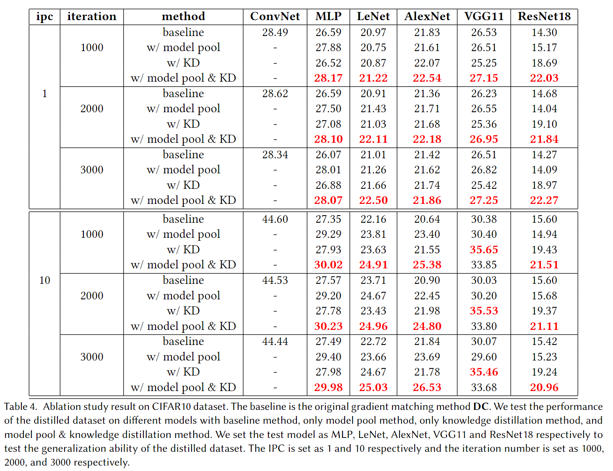
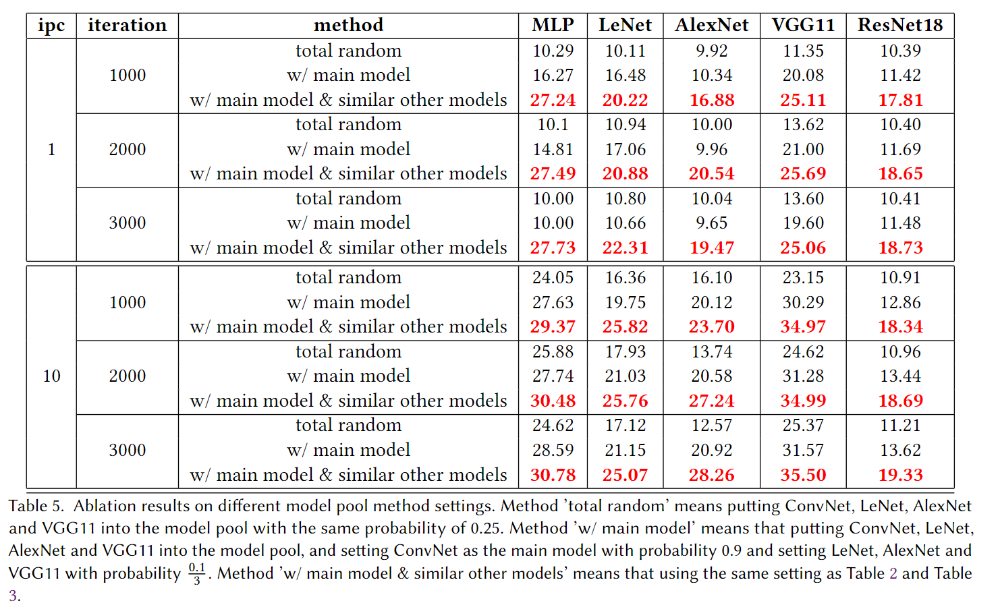

Dataset distillation, a pragmatic approach in machine learning, aims to create a smaller synthetic dataset from a larger existing dataset. However, existing distillation methods primarily adopt a model-based paradigm, where the synthetic dataset inherits model-specific biases, limiting its generalizability to alternative models. In response to this constraint, we propose a novel methodology termed "model pool". This approach involves selecting models from a diverse model pool based on a specific probability distribution during the data distillation process. Additionally, we integrate our model pool with the established knowledge distillation approach and apply knowledge distillation to the test process of the distilled dataset. Our experimental results validate the effectiveness of the model pool approach across a range of existing models while testing, demonstrating superior performance compared to existing methodologies.
As the structural complexity of neural network models continues to advance, deep learning has achieved remarkable success across diverse domains. However, the pursuit of enhanced performance in deeper networks needs a commensurate increase in the quantity of training data, resulting in a significant slowdown in training speed. Addressing this challenge, one viable approach involves reducing the size of the training dataset. Proposed by Wang et al., Dataset Distillation emerges as an effective method to achieve dataset size reduction while ensuring the efficacy of network training. The core objective of dataset distillation is the synthesis of a substantially smaller dataset derived from the original dataset, and a model trained on this synthesized dataset still exhibits robust performance on the original test dataset.
Intuitively, datasets generated through model-based methods show superior performance when tested on the architecture employed during the distillation process. However, a noticeable reduction in performance occurs when these datasets are assessed on alternative model architectures—a phenomenon we call as "performance reduction in cross-architecture." This raises the critical question of how to endow dataset distillation methods with the capability of cross-architecture generalization.
In this study, we present a novel dataset distillation method designed to enhance cross-architecture generalization, building upon DC , a gradient matching-based approach. First, our method introduces the concept of "model pool", which is used to promote cross-architecture generalization ability and can be easily extensible to other existing model-based dataset distillation methods. Also, drawing inspiration from knowledge distillation, we leverage a similar strategy when deploying our distilled dataset on alternative model architectures. Experimental evaluations conducted on the CIFAR-10 dataset demonstrate that our proposed method outperforms the original DC method in cross-architecture generalization.
We propose the concept of model pool. The model pool is a set of different models with different architectures. Every model in the model pool has its own probability to be chosen. In the original model-based method, we may reinitialize the parameters of this model many times in the total training process, noting that the model architecture doesn't change yet. In our method, the model we use and reinitialize each time may be different and it is chosen from the model pool with a given probability. In this way, we can make our distilled dataset more general as it is not only trained on a specific architecture of the model but trained on multiple architectures of models in the model pool.
Besides model pool method we mentioned above, we will perform knowledge distillation on the distilled dataset. In other words, both the teacher model and student model are trained on the distilled data, and then we try to minimize the difference (KL divergence) between the two models and their classification loss (cross-entropy loss). The teacher model is fixed as ConvNet while the student can be various. We can test the generalization ability of different student models by directing their knowledge to the fixed teacher model as closely as possible.
The overall view of our work can be seen in this picture
Ablation results for our method. We test the generalization ability of the distilled dataset on our model pool method and knowledge distillation method together and separately and compare them with the baseline method. 'ConvNet' is the main model in our model poolmethod, and we test the generalization ability of the distilled dataset on 'MLP', 'LeNet', 'AlexNet', 'VGG11', and 'ResNet18' respectively. We can see that our model pool method and knowledge distillation method together can cause a great improvement in the generalization ability of the distilled dataset compared with the baseline method.
Here are ablation results of different model pool method settings and we will show the reason why we use main model and similar other models in the experiment. We will show the result of three settings and the specific settings are mentioned in the table description. As we can see in the table, the third setting can achieve the best performance in all the cases and it’s largely better than the first setting and the second setting. Also, we will say some accuracies are equal to 10 and even lower than 10 in the first setting and the second setting. That is because the model pool is too various and the parameters are divergent in the training process. That’s why we use the third setting, which has a main model and similar other models, to experiment with the main part of this paper.
Acknowledgements: We thank Cewu Lu and Yonglu Li for their patient guidance and help.